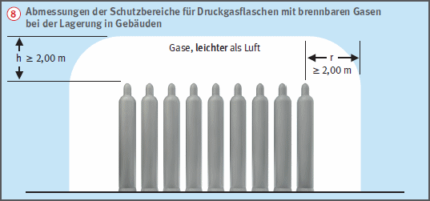
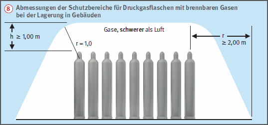

Lagerung von Druckgasbehältern in Gebäuden
|
|

Gefährdungen
- Bei der Lagerung von Druckgasbehältern besteht Brand- und Explosionsgefahr.
Schutzmaßnahmen
- Unzulässig ist die Lagerung in:
- Räumen unter Erdgleiche (Keller),
- Treppenräumen,
- Fluren,
- engen Höfen,
- Durchgängen und Durchfahrten,
- Garagen,
- Arbeits- und Sanitärräumen,
- Räume mit Gruben, Kanälen, Bodenabläufen sowie Schornsteinreinigungsöffnungen.
Ausnahme: Eine Lagerung unter Erdgleiche ist zulässig, wenn der Fußboden des Lagers nicht tiefer als 1,5 m unter Geländeoberfläche liegt und bei natürlicher Lüftung des Raumes der Lüftungsgesamtquerschnitt ≥ 10 % der Raumgrundfläche ist und nicht mehr als 50 gefüllte Flüssiggasflaschen gelagert werden. Bei Lagerung von Druckgasflaschen ist Folgendes zu beachten:
Lagerräume
- Betreten des Lagers durch Unbefugte ist untersagt.
- Am Zugang muss auf das Verbot von Zündquellen und die Lagerung von Gas durch Warnschilder hingewiesen werden.
- Es muss ein Feuerlöscher leicht erreichbar vorhanden sein
 .
.
- Druckgasflaschen möglichst stehend lagern. Bei liegender Lagerung Flaschen gegen Fortrollen sichern.
Ausnahme: Flüssiggasflaschen müssen stehend gelagert werden.
- Stehende Druckgasflaschen gegen Umfallen und Herabfallen sichern
 .
.
- Ventile mit Schutzkappen und ggf. Verschlussmuttern sichern.
- Druckgasflaschen nicht mit brennbarem Material wie Holz und Papier lagern. Bei der Zusammenlagerung von Druckgasbehältern sind die besonderen Bestimmungen der TRGS 510 zu beachten.
- Das Umfüllen von Druckgasen in Lagern ist unzulässig.
- Decken, Trennwände und Außenwände von Lagerräumen müssen mindestens feuerhemmend ausgeführt sein
 .
.
- Dächer müssen widerstandsfähig gegen Flugfeuer und strahlende Wärme sein.
- Lagerräume, die an einen öffentlichen Verkehrsweg angrenzen, sind an dieser Seite mit einer Wand ohne Türen und, bis zu einer Höhe von 2,00 m, ohne öffenbare Fenster oder sonstige Öffnungen auszuführen.
- Lagerräume müssen durch feuerhemmende Türen gegenüber anschließenden Räumen abgetrennt sein
 .
.
- Lagerräume müssen ausreichend be- und entlüftet werden. Natürliche Lüftung ist ausreichend, wenn unmittelbar ins Freie führende Zu- und Abluftöffnungen mit einem Mindestquerschnitt von jeweils 1/100 der Bodenfläche des Raumes vorhanden sind
 .
.
- Be- und Entlüftungsöffnungen möglichst diagonal im Raum anordnen.
- In Lagerräumen für brennbare Gase dürfen nur elektrische Anlagen und Betriebsmittel in explosionsgeschützter Ausführung verwendet werden
 .
.
- Für einen sicheren Stand der Behälter durch ebene und feste Fußböden sorgen. Fußbodenbeläge müssen aus schwer entflammbarem Material bestehen
 .
.


- Gefüllte Druckgasflaschen nicht in unmittelbarer Nähe von Wärmequellen lagern.
- Der Abstand von Druckgasflaschen zu Heizkörpern u. a. muss mindestens 0,50 m betragen.
- Druckgasflaschen mit brennbaren Gasen (Acetylen, Flüssiggas) und brandfördernden Gasen (Sauerstoff) dürfen zusammen gelagert werden, wenn
- die Gesamtzahl 150 Druckgasflaschen nicht übersteigt,
- wenn zwischen den Lagerklassen ein Abstand von mindestens 2,0 m eingehalten wird.
Schutzbereich
- Druckgasflaschen mit brennbaren Gasen müssen von einem Schutzbereich umgeben sein
 . Im Schutzbereich dürfen sich keine Zündquellen befinden. Es muss ein Warnschild vorhanden sein.
. Im Schutzbereich dürfen sich keine Zündquellen befinden. Es muss ein Warnschild vorhanden sein.

- Bei Räumen mit einer Grundfläche < 20 qm ist der gesamte Raum Schutzbereich.
07/2021